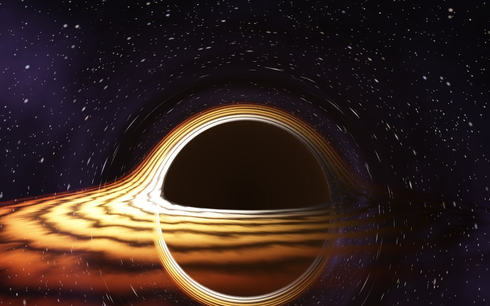
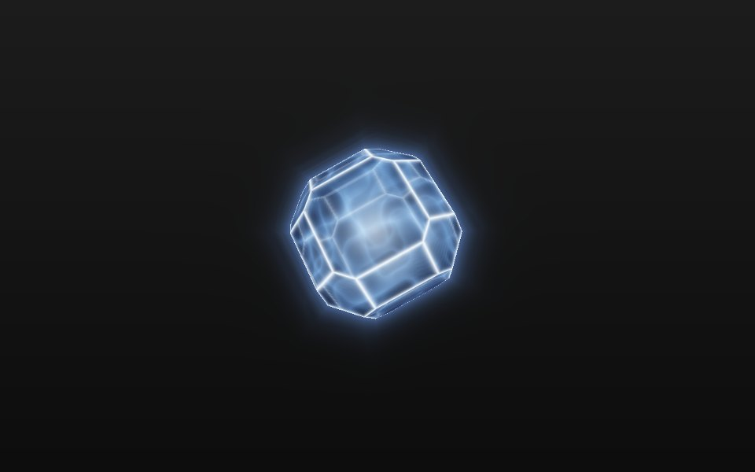
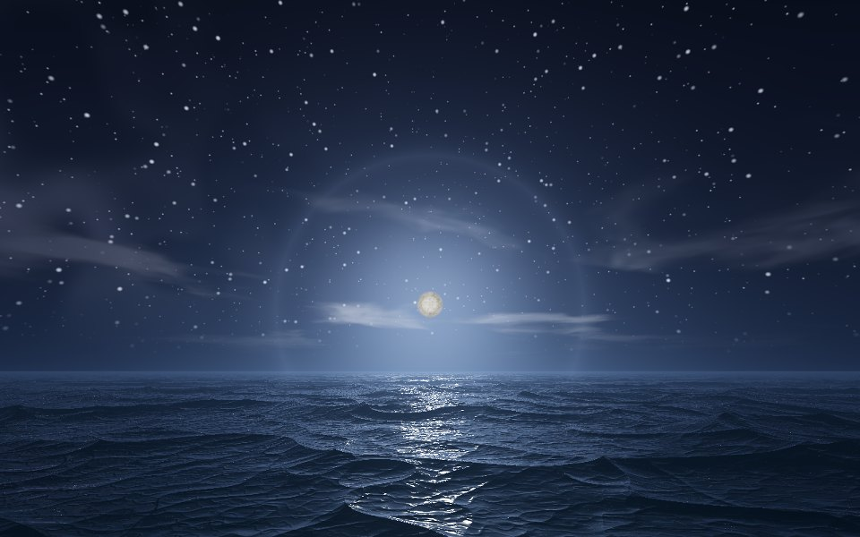
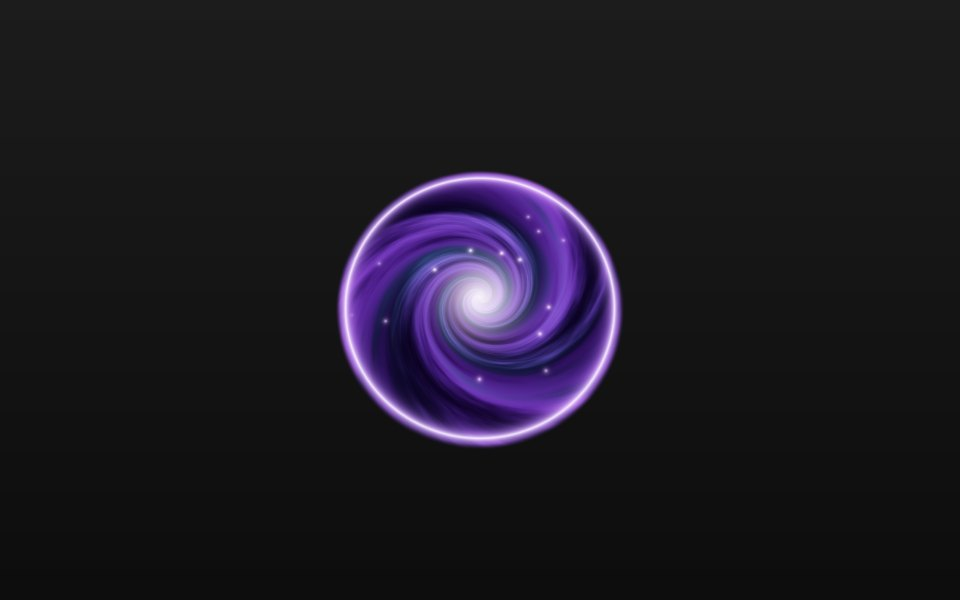
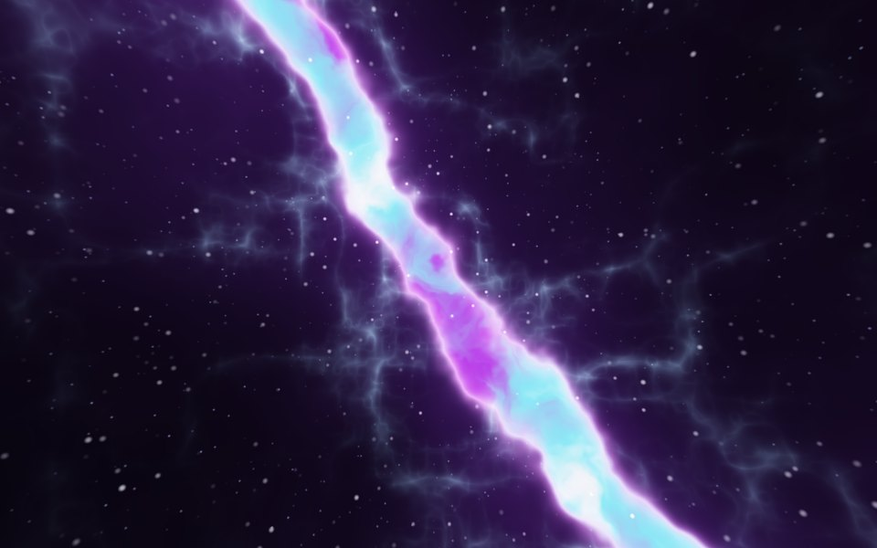
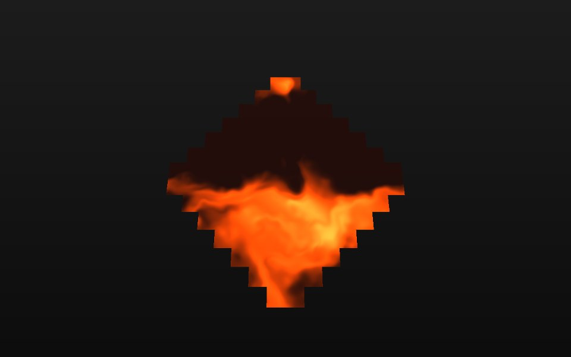
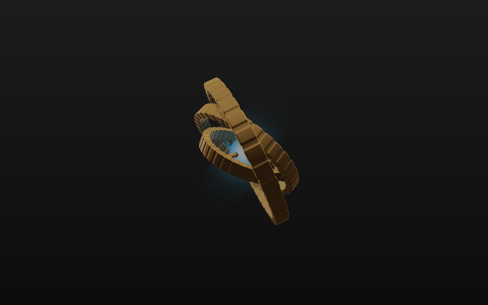
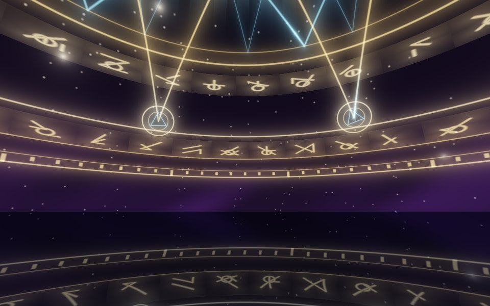

Hogyoku Vessel
Write Minecraft shaders and watch them run. One click builds a resource pack for every version from 1.21 to 26.3.

Event HorizonSky
HogyokuObject
Moonlit OceanSky
PortalSurface
Cosmic RiftSky- HyperspaceSky

Lava FlowMaterial
GyroscopeObject
Astral SigilSky
Every picture here is a shader made in Vessel. They all come with the app as examples you can open and pull apart.
Edit it right here
This is a real Vessel effect running in your browser. Change a number and watch it change, or drag the picture to look around.
Compiling
One effect, every version
Minecraft's core shaders changed shape five times between 1.21 and 26.3. Vessel keeps a template for each one, drops your code into all of them and checks every result with glslang, so a mistake shows up in the editor instead of as a broken game.
- 1.21the original item shader
- 1.21.6uniforms move into blocks
- 26.1a new item shader replaces it
- 26.2light and overlay color move in
- 26.3new includes, checked as Vulkan too
Five kinds of effect
An effect is one file with one main function. The function you write decides what it becomes in game.
Sky
Surrounds the player, from sunsets to black holes.
vec3 sky(vec3 dir, float time)Object
A 3D shape floating inside an item.
vec4 object(vec3 origin, vec3 dir, float time)Surface
Paints the item's own faces: screens, portals, circles.
vec4 surface(vec2 uv, vec3 pos, vec3 normal, vec3 view, float time)Material
Repaints every pixel of a normal item sprite.
vec4 material(vec4 texel, vec2 uv, vec3 normal, vec3 view, float time)Overlay
Lays color over the player's view, like frost or rain.
vec4 overlay(vec2 screen, vec3 dir, float time)
Learn shaders inside the editor
Fourteen lessons take you from your first line of GLSL to ray marched objects. Each one opens beside your code, ticks tasks off as you write them and ends with a challenge you solve on your own. New to code? Lesson one starts with a broken sky and shows you how to read the error.
- GLSL basics
- Your first sky
- A sun
- Noise clouds
- Stars
- Domain warping
- Color like a pro
- Your first object
- Combining shapes
- Lighting objects
- Glow and see-through
- Your first surface
- Your first material
- Your first overlay
Download free
Open source under the MIT license. Every download comes with its own Java, so there's nothing else to install. Needs a graphics card with OpenGL 3.3.
Windows
Run the installer. It adds a Start menu shortcut and keeps the app up to date.
Get the installermacOS
Pick the Apple Silicon or Intel zip, unzip it and drag the app into Applications. It isn't signed by Apple yet, so the first time, right-click it and choose Open.
Linux
Unpack the tar.gz and run Hogyoku Vessel/bin/Hogyoku Vessel. For the shader check, also install glslang.